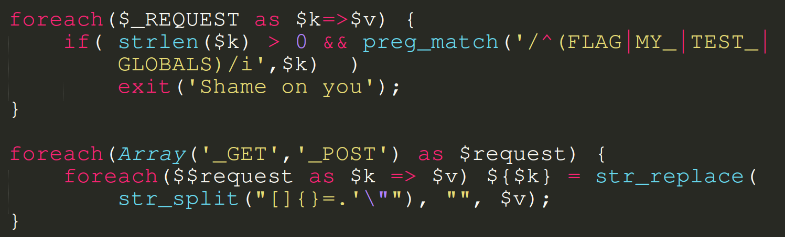
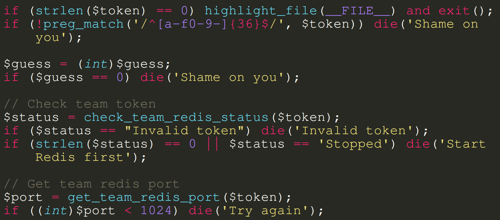
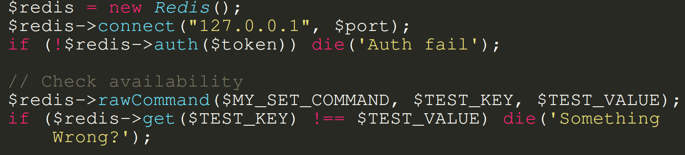
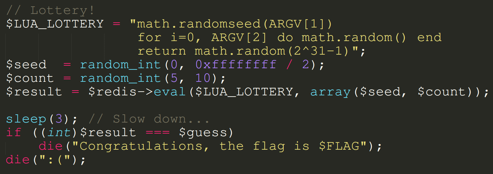

class: center, middle # Challenge Talk - luatic --- ## Who am I? - theguy --- ## What challenge do I present? - CTF: HITCON 2019 - Challenge: luatic --- ## What was the intended function? - Starting a backend with team token - Checking the uptime - Giving guess for getting the flag --- ## Source Code Overview - Parameter handling  --- ## Pseudo Code - Parameter handling - check if `FLAG | MY_ | TEST_ | GLOBALS` in any parameter key - create variables with `$<key> = <value>` - `<value>` gets stripped of any `[]{}=.'"` - (given token has to be "real" token) --- ## Source Code Overview - Input Checking  --- ## Source Code Overview - Redis  --- ## Pseudo Code - Input & Redis init - (check if Redis server is started) - (get Redis port) - (connect to Redis) - execute a **raw command** to see if Redis is available --- ## Source Code Overview - Lottery & flag(?)  --- ## Pseudo Code - Lottery & flag(?) - do a bunch of randomness stuff - if guess is magically the correct value -> 🚩 --- ## What to do? - Set PHP variables by providing `$_GET['variable_name'] = '🔮'` - What to overwrite? - `$_SERVER` ? - `$_GLOBALS` ? - `$_REQUEST` ? --- ## What to overwrite? - Remember this?<br> `$redis->rawCommand($MY_SET_COMMAND, $TEST_KEY, $TEST_VALUE);` - What the 🔥 does that do? --- ## Redis Overview - Centralized Key-Value Storage - Basic functionality like storing values and getting values --- ## What to overwrite? - We can put values in the storage that is only used by us 🎉 --- ## What to overwrite? - We can put values in the storage that is only used by us 🙄 --- ## Redis Eval - Hint from the source code:<br> `$result = $redis->eval($LUA_LOTTERY, array($seed, $count));` - Redis has built-in Lua Script Engine --- ## What can the Lua Script Engine do? - Create functions - Execute functions - Return values to Redis --- ## What to do with the Script Engine? - Dumbest possible idea? --- ## What to do with the Script Engine? - Dumbest possible idea?<br> -> Overwriting `math.random` of course ! --- ## What to do with the Script Engine? - Dumbest possible idea?<br> -> Overwriting `math.random` of course ! - Does it work? --- ## What to do with the Script Engine? - Dumbest possible idea?<br> -> Overwriting `math.random` of course ! - Does it work? **Yes!!** --- ## What to do with the Script Engine? - Dumbest possible idea?<br> -> Overwriting `math.random` of course ! - Does it work? **Yes!!** - Tested locally with ```{lua} math.random = function (a) { return 42; } ``` --- ## What to do with the Script Engine? - Dumbest possible idea?<br> -> Overwriting `math.random` of course ! - Does it work? **Yes!!** - Tested locally with ```{lua} math.random = function (a) { return 42; } ``` - But server sanitizes --- ## What is sanitized? - if key contains `FLAG | MY_ | TEST_ | GLOBALS` <br> then `exit("Shame on you")` - `[]{}=.'"` symbols in the value gets replaced with `""` --- ## Filter Bypass ```{php} foreach(Array('_GET','_POST') as $request) { foreach($$request as $k => $v) { ``` - Looks kinda suspicious 🤔 --- ## Filter Bypass ```{php} foreach(Array('_GET','_POST') as $request) { foreach($$request as $k => $v) { ``` - Looks kinda suspicious 🤔 - Using `_GET` parameters to overwrite `_POST` which is then created after filtering --- ## Filter Bypass - How to exploit this? --- ## Filter Bypass - How to exploit this? - URL like `/luatic.php?_POST[foo]=bar&_POST[foo2]=bar2` --- ## Filter Bypass - How to exploit this? - URL like `/luatic.php?_POST[foo]=bar&_POST[foo2]=bar2` - From given URL, PHP creates:<br> `$_GET['_POST'] = array( 'foo'=>'bar', 'foo2'=>'bar2')` --- ## Filter Bypass - How to exploit this? - URL like `/luatic.php?_POST[foo]=bar&_POST[foo2]=bar2` - From given URL, PHP creates:<br> `$_GET['_POST'] = array( 'foo'=>'bar', 'foo2'=>'bar2')` - First iteration: `$_GET` - Creates `$_POST = array(...)` --- ## Filter Bypass - How to exploit this? - URL like `/luatic.php?_POST[foo]=bar&_POST[foo2]=bar2` - From given URL, PHP creates:<br> `$_GET['_POST'] = array( 'foo'=>'bar', 'foo2'=>'bar2')` - First iteration: `$_GET` - Creates `$_POST = array(...)` - Second iteration `$_POST` - Creates `$foo` and `$foo2` --- ## Filter Bypass - Works because there is no check if `_POST` is in key - But `.` and `=` stilled filtered out - So can't just execute: ```{lua} math.random = function (a) { return 42; } ``` --- ## Lua Quirks for Filter Bypass - Got stuck for a moment - But someone saved the night by showing me Lua's "Syntactic Sugar" --- ## Lua Quirks for Filter Bypass - `math.random = function(){}` <br> becomes <br> `function math.random(){}` --- ## Lua Quirks for Filter Bypass - `math.random = function(){}` <br> becomes <br> `function math.random(){}` - `math.random` becomes `math:random` --- ## Finished exploit - Reset database - just to make sure any previous attempts get reset - Overwrite `math.random` in one request - Guess the very hard to guess random value and get the flag --- class: center, middle # hitcon{Lua^H Red1s 1s m4g1c!!!} --- ## Conclusion - "Classic" Web Challenge - No guesswork needed - New technologies: Redis and Lua